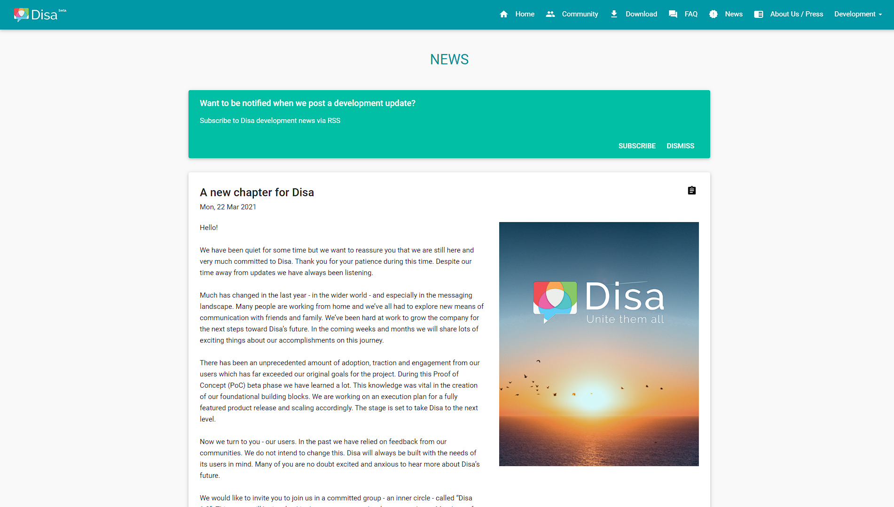
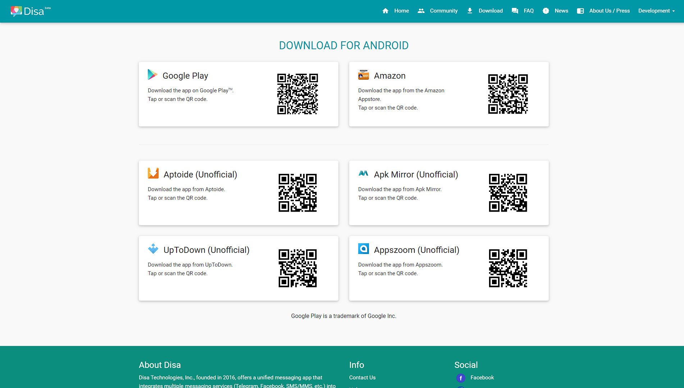
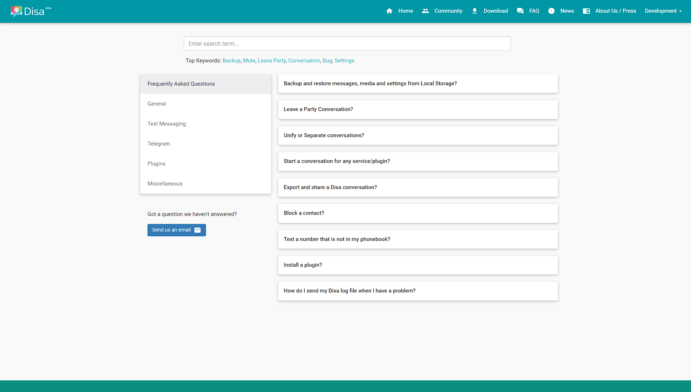
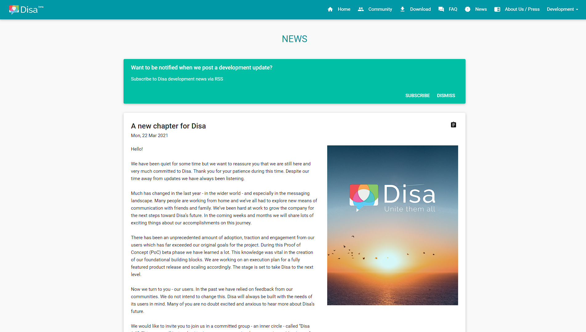
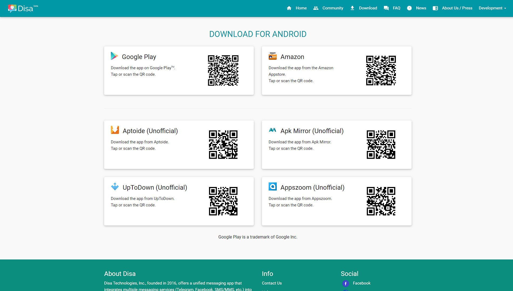
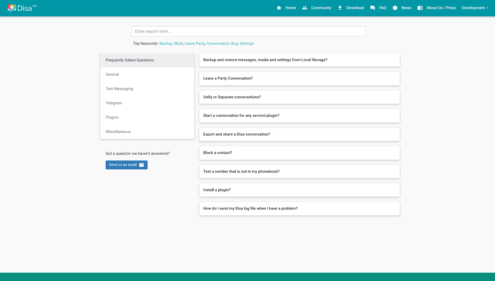

Disa Technologies - Product Showcase
 





About
Company & Requirements
Disa Technologies, Inc. is a US-based start-up in the software development industry. Their mobile app “Disa Unified Messenger” had an existing website and landing page that needed a refresh. I had built a rapport with the team as an alpha/beta tester of the application and offered to take on the Web Developer role.
The company required an updated version of its main website. The company did not have a product style guide with which to base any new designs. I was also required to create one from their existing content and branding (logos and the app itself). Several important pages were missing from the site, including those for Downloads, an FAQ, and Press Enquiries.
Solution & Technologies Used
The existing website was a static site built in plain HTML, CSS, and JavaScript (plus JQuery). There was no dynamic content on the site. I continued to use the existing technology stack rather than moving the site to a CMS or using a front-end framework like React.js.
I took full advantage of the Bootstrap CSS framework to unify the look. Bootstrap also helped improve the overall responsiveness of the page layouts with its 12-column grid system and mobile-first design approach.
Challenges
The website required a "changelog" for the mobile app which was to be kept in sync with the Github releases section. This meant whenever a new version of the app was released it would need to be reflected on the website. When users of the app opened it after an update, they were greeted by the latest changelog from the website.
Alongside the main website, this also meant developing a tool that could take the Jira (Atlassian) info relating to the latest update and turn it into XML, which would be read by a script on the ‘changelog’ page when it loaded. I worked with the Jira API to query new app releases, access their changelogs, and convert the response data into an XML element.
If I encountered this challenge again, I would use a modern JavaScript framework to handle the data loading, HTML element creation, and interactions. I would also store the changelog data in a CMS for ease of updating and access by the company.